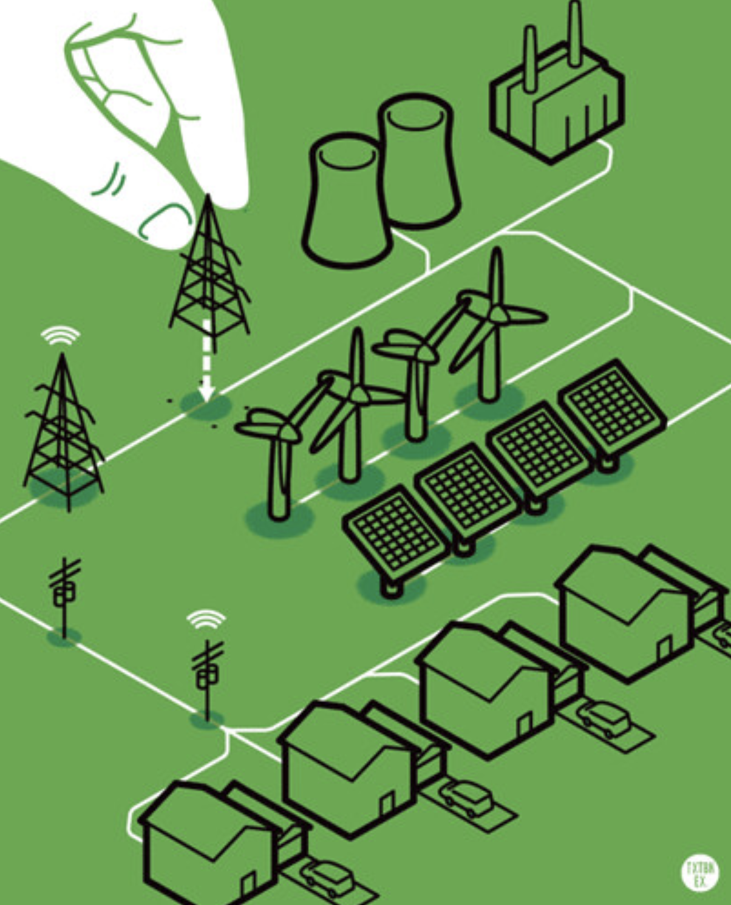

Smart transmission lines shut off to avoid sparking fires
In the future, our electric grid will get smarter. The concept of a “smart grid” has been around for a long time. Unlike the grid that exists today in most places, a grid that is “smart” includes sensing, control, and communications equipment along the transmission and distribution lines. This allows the equipment to perform basic actions in case of emergency, as well as allow utilities and grid operators to manage electrical “traffic” more efficiently.
Smart Grid - Infrastructure by James Provost
As fire seasons get longer and more intense, one step that can be taken to help prevent fires is to install safety equipment on transmission lines for rapid shutoff in the event of a downed or compromised power line. Downed power lines in California are responsible for about 8 percent of the state’s wildfires, including the 2018 Camp Fire that destroyed the NorCal town of Paradise and killed at least 85 people. While the utility responsible, PG&E, has talked about burying power lines (as is done in urban areas), the cost of this is upwards of $10 billion. Beginning to retrofit transmission lines to be “smarter” would not only solve this problem, but also make communities and line workers safer while reducing electricity costs over time.
Photo by Dmitriy on Unsplash